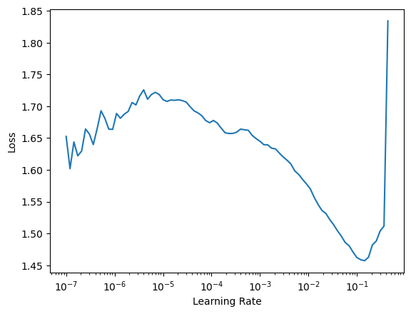
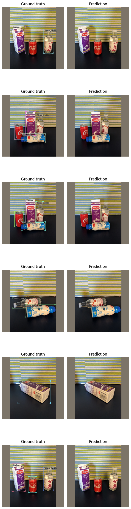

My notebook

Installing IceVision and IceData
# !pip install icevision[all] icedata
Imports
%load_ext autoreload
%autoreload 2
from icevision.all import *
# model_type = models.torchvision.faster_rcnn
# model_type = models.torchvision.mask_rcnn
# model_type = models.torchvision.keypoint_rcnn
# backbone = model_type.backbones.resnet18_fpn
# model_type = models.mmdet.retinanet
# model_type = models.mmdet.mask_rcnn
# backbone = model_type.backbones.resnet50_fpn_1x
# model_type = models.ross.efficientdet
# backbone = model_type.backbones.tf_lite0
model_type = models.ultralytics.yolov5
backbone = model_type.backbones.small()
Data
data_type = icedata.fridge
# data_type = icedata.pennfudan
# data_type = icedata.biwi
data_dir = data_type.load_data()
train_ds, valid_ds = data_type.dataset(data_dir)
# show_sample(train_ds[0])
0%| | 0/128 [00:00<?, ?it/s]
[1m[1mINFO [0m[1m[0m - [1m[34m[1mAutofixing records[0m[1m[34m[0m[1m[0m | [36micevision.parsers.parser[0m:[36mparse[0m:[36m136[0m
DataLoader
# DataLoaders
train_dl = model_type.train_dl(train_ds, batch_size=4, num_workers=4, shuffle=True)
valid_dl = model_type.valid_dl(valid_ds, batch_size=4, num_workers=4, shuffle=False)
# batch = first(train_dl)
# model_type.show_batch(batch, ncols=4)
Training
model = model_type.model(backbone=backbone(), num_classes=data_type.NUM_CLASSES, img_size=384, device=torch.device('cpu'))
model.model[-1].anchors.device
model.cuda();
model.model[-1].anchors.device
metrics = [COCOMetric(metric_type=COCOMetricType.bbox)]
# metrics = [COCOMetric(metric_type=COCOMetricType.mask)]
device(type='cpu')
device(type='cuda', index=0)
Training using fastai
learn = model_type.fastai.learner(dls=[train_dl, valid_dl], model=model, metrics=metrics)
learn.freeze()
learn.lr_find()
SuggestedLRs(lr_min=0.05248074531555176, lr_steep=0.43651583790779114)

learn.fine_tune(1, 1e-2, freeze_epochs=1)
| epoch | train_loss | valid_loss | COCOMetric | time |
|---|---|---|---|---|
| 0 | 0.000000 | 00:00 |
---------------------------------------------------------------------------
RuntimeError Traceback (most recent call last)
<ipython-input-16-92bba398a0a4> in <module>
----> 1 learn.fine_tune(1, 1e-2, freeze_epochs=1)
~/miniconda3/envs/icedl/lib/python3.7/site-packages/fastcore/logargs.py in _f(*args, **kwargs)
54 init_args.update(log)
55 setattr(inst, 'init_args', init_args)
---> 56 return inst if to_return else f(*args, **kwargs)
57 return _f
~/miniconda3/envs/icedl/lib/python3.7/site-packages/fastai/callback/schedule.py in fine_tune(self, epochs, base_lr, freeze_epochs, lr_mult, pct_start, div, **kwargs)
159 "Fine tune with `freeze` for `freeze_epochs` then with `unfreeze` from `epochs` using discriminative LR"
160 self.freeze()
--> 161 self.fit_one_cycle(freeze_epochs, slice(base_lr), pct_start=0.99, **kwargs)
162 base_lr /= 2
163 self.unfreeze()
~/miniconda3/envs/icedl/lib/python3.7/site-packages/fastcore/logargs.py in _f(*args, **kwargs)
54 init_args.update(log)
55 setattr(inst, 'init_args', init_args)
---> 56 return inst if to_return else f(*args, **kwargs)
57 return _f
~/miniconda3/envs/icedl/lib/python3.7/site-packages/fastai/callback/schedule.py in fit_one_cycle(self, n_epoch, lr_max, div, div_final, pct_start, wd, moms, cbs, reset_opt)
111 scheds = {'lr': combined_cos(pct_start, lr_max/div, lr_max, lr_max/div_final),
112 'mom': combined_cos(pct_start, *(self.moms if moms is None else moms))}
--> 113 self.fit(n_epoch, cbs=ParamScheduler(scheds)+L(cbs), reset_opt=reset_opt, wd=wd)
114
115 # Cell
~/miniconda3/envs/icedl/lib/python3.7/site-packages/fastcore/logargs.py in _f(*args, **kwargs)
54 init_args.update(log)
55 setattr(inst, 'init_args', init_args)
---> 56 return inst if to_return else f(*args, **kwargs)
57 return _f
~/miniconda3/envs/icedl/lib/python3.7/site-packages/fastai/learner.py in fit(self, n_epoch, lr, wd, cbs, reset_opt)
205 self.opt.set_hypers(lr=self.lr if lr is None else lr)
206 self.n_epoch = n_epoch
--> 207 self._with_events(self._do_fit, 'fit', CancelFitException, self._end_cleanup)
208
209 def _end_cleanup(self): self.dl,self.xb,self.yb,self.pred,self.loss = None,(None,),(None,),None,None
~/miniconda3/envs/icedl/lib/python3.7/site-packages/fastai/learner.py in _with_events(self, f, event_type, ex, final)
153
154 def _with_events(self, f, event_type, ex, final=noop):
--> 155 try: self(f'before_{event_type}') ;f()
156 except ex: self(f'after_cancel_{event_type}')
157 finally: self(f'after_{event_type}') ;final()
~/miniconda3/envs/icedl/lib/python3.7/site-packages/fastai/learner.py in _do_fit(self)
195 for epoch in range(self.n_epoch):
196 self.epoch=epoch
--> 197 self._with_events(self._do_epoch, 'epoch', CancelEpochException)
198
199 @log_args(but='cbs')
~/miniconda3/envs/icedl/lib/python3.7/site-packages/fastai/learner.py in _with_events(self, f, event_type, ex, final)
153
154 def _with_events(self, f, event_type, ex, final=noop):
--> 155 try: self(f'before_{event_type}') ;f()
156 except ex: self(f'after_cancel_{event_type}')
157 finally: self(f'after_{event_type}') ;final()
~/miniconda3/envs/icedl/lib/python3.7/site-packages/fastai/learner.py in _do_epoch(self)
189
190 def _do_epoch(self):
--> 191 self._do_epoch_train()
192 self._do_epoch_validate()
193
~/miniconda3/envs/icedl/lib/python3.7/site-packages/fastai/learner.py in _do_epoch_train(self)
181 def _do_epoch_train(self):
182 self.dl = self.dls.train
--> 183 self._with_events(self.all_batches, 'train', CancelTrainException)
184
185 def _do_epoch_validate(self, ds_idx=1, dl=None):
~/miniconda3/envs/icedl/lib/python3.7/site-packages/fastai/learner.py in _with_events(self, f, event_type, ex, final)
153
154 def _with_events(self, f, event_type, ex, final=noop):
--> 155 try: self(f'before_{event_type}') ;f()
156 except ex: self(f'after_cancel_{event_type}')
157 finally: self(f'after_{event_type}') ;final()
~/miniconda3/envs/icedl/lib/python3.7/site-packages/fastai/learner.py in all_batches(self)
159 def all_batches(self):
160 self.n_iter = len(self.dl)
--> 161 for o in enumerate(self.dl): self.one_batch(*o)
162
163 def _do_one_batch(self):
~/miniconda3/envs/icedl/lib/python3.7/site-packages/fastai/learner.py in one_batch(self, i, b)
177 self.iter = i
178 self._split(b)
--> 179 self._with_events(self._do_one_batch, 'batch', CancelBatchException)
180
181 def _do_epoch_train(self):
~/miniconda3/envs/icedl/lib/python3.7/site-packages/fastai/learner.py in _with_events(self, f, event_type, ex, final)
153
154 def _with_events(self, f, event_type, ex, final=noop):
--> 155 try: self(f'before_{event_type}') ;f()
156 except ex: self(f'after_cancel_{event_type}')
157 finally: self(f'after_{event_type}') ;final()
~/miniconda3/envs/icedl/lib/python3.7/site-packages/fastai/learner.py in _do_one_batch(self)
164 self.pred = self.model(*self.xb)
165 self('after_pred')
--> 166 if len(self.yb): self.loss = self.loss_func(self.pred, *self.yb)
167 self('after_loss')
168 if not self.training or not len(self.yb): return
~/git/icevision/icevision/models/ultralytics/yolov5/fastai/learner.py in loss_fn(preds, targets)
30
31 def loss_fn(preds, targets) -> Tensor:
---> 32 return compute_loss(preds, targets)[0]
33
34 learn = adapted_fastai_learner(
~/miniconda3/envs/icedl/lib/python3.7/site-packages/yolov5/utils/loss.py in __call__(self, p, targets)
115 device = targets.device
116 lcls, lbox, lobj = torch.zeros(1, device=device), torch.zeros(1, device=device), torch.zeros(1, device=device)
--> 117 tcls, tbox, indices, anchors = self.build_targets(p, targets) # targets
118
119 # Losses
~/miniconda3/envs/icedl/lib/python3.7/site-packages/yolov5/utils/loss.py in build_targets(self, p, targets)
183 if nt:
184 # Matches
--> 185 r = t[:, :, 4:6] / anchors[:, None] # wh ratio
186 j = torch.max(r, 1. / r).max(2)[0] < self.hyp['anchor_t'] # compare
187 # j = wh_iou(anchors, t[:, 4:6]) > model.hyp['iou_t'] # iou(3,n)=wh_iou(anchors(3,2), gwh(n,2))
RuntimeError: Expected all tensors to be on the same device, but found at least two devices, cuda:0 and cpu!
- targets is on GPU; I guess this comes from fastai
- anchors is on CPU
model_type.show_results(model, valid_ds)

torch.save(model.state_dict(), 'fridge_tf_efficientdet_lite0')
infer_dl = model_type.infer_dl(valid_ds, batch_size=2, shuffle=False)
preds = model_type.predict_from_dl(model, infer_dl, keep_images=True)
show_preds(preds=preds[:2], ncols=3)
Training using Lightning
class LightModel(model_type.lightning.ModelAdapter):
def configure_optimizers(self):
return SGD(self.parameters(), lr=1e-4)
light_model = LightModel(model, metrics=metrics)
trainer = pl.Trainer(max_epochs=1, gpus=1)
trainer.fit(light_model, train_dl, valid_dl)
GPU available: True, used: True
TPU available: None, using: 0 TPU cores
| Name | Type | Params
--------------------------------
0 | model | Model | 7.1 M
--------------------------------
7.1 M Trainable params
0 Non-trainable params
7.1 M Total params
28.297 Total estimated model params size (MB)
Validation sanity check: 0it [00:00, ?it/s]
Training: 0it [00:00, ?it/s]
Validating: 0it [00:00, ?it/s]
1
Happy Learning!
If you need any assistance, feel free to join our forum.